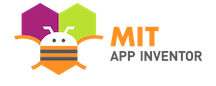
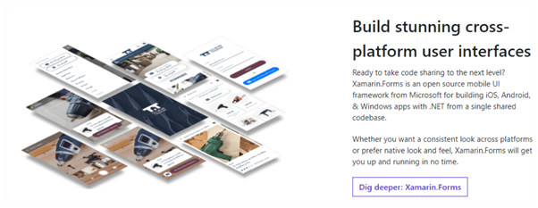

About the Project
Intro and overview
As thoroughly examined and explained within the Project Idea part of Assignment 2, the main idea of our project is application that helps parents/guardians to manage and plan routines and task to organize their children.
The app will be named ‘Advenchore Quest’ and contains a game that will be used in conjunction with sets of routines and tasks, so children will be motivated to complete the responsibilities
that parents and guardians have prepared. This program will be used by both parents and children, to help them get through the day. The big picture like many other applications, is to make life
easier for a certain demographic. Allowing time to relax and take some time off on a hectic day is important, and will allow for better decision making and positive mental wellbeing as the day goes on.
The main outcome that can be achieved by creating this program is more time for parents/guardians and, organizational skills development within kids at a younger age. Having more time will allow for a
better and less stressful day for parents, whereas kids will learn the fundamental factors of what organization is and how to commit to a plan at a young age. This application will benefit both parties in
different ways, allowing them to grow as smarter and better people.
We are not expecting these outcomes to be evident the moment the program is developed, but rather through actual use of the program over a period of time. Until the users of the program are comfortable with
every feature and somewhat develop a sense of dependency with a planner application. Only then can evidence of a positive outcome be perceived. Through this phase of seeing the positive impacts, we will also
be able to see the negative aspects. This will enable us to get an understanding of what was wrong with the first iteration and address these problems before an updated version in complete. This cycle will be
continuous, throughout the lifetime of the application.

Motivation
One of the main motivations behind the creation of the project is the wide demographic which is plagued by the same problem. By concentrating efforts on a group of people who share the same dilemma,
it will allow us to offer a digital solution as well as kickstart innovation within a market where customers have a lack of option or input. Giving the user what they want is one other motivation behind
the idea of the application. There are many planners out there who claim to be the best, but to truly be the best they must offer all the features that customers want and then some more. This project is
important as it is designed to help people instead of waste their time. Offering users with a refreshing and innovative program, instead of one that is full of gimmicks which they might use for a couple of
days and then delete. Ensuring that they find some level of dependability with the application to run a fraction of their day and make everyone’s life a bit easier.
This idea was conceived at the perfect time and place and it is a mystery why there is not something out there like this now. With new digital trends affecting everyone’s life nowadays, it is hard to see any
good innovations that creates a positive impact on people's lives. It has now been a decade since people have been dependent of applications to run parts of their life. For example, instead of going to the bank
to manage your bank account, most people use the application on their phones to view and manage their bank accounts. This can be said about virtually anything that we interact with including, food, friends,
entertainment and even work. There are millions of applications that people depend on to get through their day, and that number is only rising. As people have grown custom to using applications daily, there are
many looking for more useful applications that fit into their lives. With parents and guardians who have grown up with the boom of technology, social media, and useful applications they will be ecstatic to find
an application that offers what our project idea encompasses.

By continuing efforts on creating a working prototype and even a finished product down the line, will show future employers that we see the world changing around us, and understand what people want. This, we believe,
is valued by employers, as finding what people want and need without them knowing is the basic backbone of big-name companies that are household names today.
Through this, employers will also understand that we have the brains to think of an innovation and the guts to go through with it till the end. This will let them know that we are genuinely interested and motivated
on innovative ideas. There are many stories of people who have through of a spectacular idea but did not have the motivation or bravery to go through with it or even try. Employers will also become aware of the skill
that the individuals within our group possess, as making an application from scratch is no easy task but takes months of planning and hard work.
Through that hard work they will see that we are all determined and
have a sense of responsibility to deliver quality work.
Landscape
-
There are several other applications that offer a similar feature set to our project idea. These include:
- The Cozie Chore App
- S’moresUp Chores
- Our Home Chores
- Kachinga Chore and Allowance
- Greenlight Chore and Allowance
These market leading applications lack a factor that we believe is vital to establish motivation amongst children. Our innovative feature is a built-in game that
is connected to and influenced by the tasks and chores that children do. Enabling children to feel a sense of accomplishment after completing a task or chore assigned
by a guardian or parent. Most of these applications were explained within Project Ideas within Assignment 2. These applications focus on one aspect such as being a planner
or allowance manager which are the main features that are littered within all parenting applications. There is no application that allows the child to feel properly involved
and motivated to organize and get into the mindset of getting things done.
With this idea in mind, introducing a game is game changing as it keeps the child engaged by means of completing tasks and chores, helping them to stay organized will having fun
along the way. Other applications focus more on parental control and how parents have full control over the application. Our idea takes that into consideration as parents/guardians
are in control of their own children and decide how they do their chores and play the game. Other applications also look towards a straighter forward way that makes doing tasks and
chores repetitive and somewhat boring, which does not engage children and instead builds a negative association to doing work. We are keeping children motivated and intrigued with a game
and unique feature will positively change the way they think about doing work.
The best way to get this application to our demographic we think is through clever marketing strategies like, smart advertising and thorough investigation into our competitors and how
they are presenting their product. Smart advertising techniques such as pinpointing digital platforms which our main target audience use and advertising our product there. Through review
we have seen our intended demographic ages varying from late 20’s to mid-30’s using social media, and other social interactive software. Paying money to these companies and becoming licensed advertisers,
will promote our product to the right people at the right time in their lives. Having an understating of our competitors and how they operate is important as well. Using their products, services and even
having discussions with their developers will help us understand how they reach their users. Understanding how similar applications on different markets work will also give us ample data to review and use
in future efforts. As we go on, we will find more ways to integrate our product into people’s lives, such as building brand loyalty with users and using word of mouth to further spread the product.

Detailed Description
Aims
As a team our aim for this assignment is to create a highly customizable and easy to manipulate app that manages and organizes chores, tasks, and activities.
The app will be presented as a game where the children earn rewards for doing their chores, tasks, and activities that their parents or guardians have put in place.
Since this app can also be used as a planner it may help children from an early age manage their time. Rewards such as in game points, level ups, and even real-life gifts
(prepared and presented by the parents/guardians) can be achieved with the completion of the child’s assigned tasks, chores, and activities.
To begin our project, we initially set goals, the first of which is developing concept art for our idea. Concept art is a reference point that we would begin with when designing our app.
It is highly important that it is created because it will align the brains of everyone on the team to what the finished product may look like.
Another goal we have set to help complete our aim is setting up the GUI coding for our idea. By setting up the GUI coding we will be able to develop the core functions and visuals.
It will be based on concept art. We plan to have four different sections of the game on the main screen. When the app is opened the user will start on the main page and be able to
click from there to go to one of three different sections. These sections are the Planner, Game, Rewards, and Settings sections.
In the planner section users will be able to see a calendar that parents can assign tasks and rewards to. It can be used as a normal planner to put in schoolwork due dates and
extracurricular activities as well. This section can only be accessed by a parent or guardian because it contains critical application functions.
The second part is for the actual game. Here the children can progress through stories and adventures that have been directly influenced by their tasks.
In the Rewards section the user can see all the rewards they have earned and what tasks they have earned them from. Rewards that can be given include extra points to level up
faster, extra health to use during boss fights or when low on health, in game currency for different abilities or outfits, rescues which allow players to gain help from a computer,
a generated player who will aid in their journey, extra time which will enable the user to keep playing an additional five minutes past the set time by the parents (up to fifteen extra
minutes can be used at a time), and abilities that can be used to help defeat enemies or explore wider areas (wear over a period of time but can only be used once).
Finally, in the settings section one will be able to edit gameplay settings including combat settings and notification frequencies.
Plans and Progress
Simply put, the project (Advenchore Quest) is a multifunctional application that allows parents/guardians to digitally organise their children’s tasks and chores.
The planner works in conjunction with multiple games,
that parents or children can choose from or design themselves. This project is unique as it allows both children and parents/guardians to positively benefit from the use of the application. Parents are given full
control of the application, and can change many aspects of scheduling, gameplay, and other main functions. This is important, as a parent can fine tune the application to fit into their busy lives. We believe
that letting parents tweak main features of the program will also allow parents to still hold a level of control with their children, letting them experience the game in a manner that parents find safe.
As mentioned before, the application will consist of a planner which is controlled by parents/guardians. This planner schedules a child’s day through to a week, enabling parents/guardians to manage daily routines,
chores, and tasks through a mobile device. The game is an innovative feature, as it will allow children to be further engulfed in the experience of doing tasks to further progress through their game. Routines, chores,
and tasks will have to be completed to get through different levels, gain points, buy in game items, get power ups and a multitude of rewards. Parents will be able to schedule more than one child if they desire, so that each child
can see what they are doing
and when it has been scheduled to be done.
The rewards are what link the planner and game together. Parents/guardians will regulate the given task and assign the level of reward it holds when completed. This part is important as parents/guardians will get
to decide what task they deem is more important, which then influences their child’s view on that task. Parents/guardians will also access to the settings menu where certain aspects of gameplay and user experience
can be tweaked, to ensure the program is running as they want it. For example, they will be able to change certain parameters on fighting during game sessions and access dark mode to help with eyecare.
Through the rewards menu children will be able to view how they are progressing through the game and certain tasks and chores. This feature gets interesting when multiple children are added into the page.
Allowing kids to become more competitive and strive to complete work to beat other children or siblings. If parents wish to, they can receive and review regular notifications on how far their children are from
completing a task to what level they have achieved in the game. In future updates, a feature to confirm completion of work will be added, so children can send a short video or photo to confirm that set work has
been completed. All completed work will get passed through parents/guardians, where they get to decide on whether to continue, ask for a redo, or change reward. The application will be able to work together with
different phones and share data among themselves, to provide a better social atmosphere and collaboration with others. In future updates multiplayer options with groups of children will be introduced,
to build basic teamwork and social skills. Most of the games will be premade, but children and parents will have the option to create their own world and characters. We believe that allowing users to
create and discover new worlds, will boost creativity in children and ensure the list of explorable worlds, characters and storylines keeps growing.
With a diverse number of stories and unexplored worlds, children will be further enticed to keep using the application to discover new paths while still staying productive and social.
New and improved features and changes will be implemented through the lifetime of the application, to keep everything easy to use and understand for future parents. For new updates and changes to
leave a positive mark on users, a feedback form will be added to the main page. This form can be used to relay any missing features, bugs, and other problems that users have faced when using the application.
Through these feedback forms and reviews, we will be able to cater for each individual and understand what changes will make a positive impact on the user base.
Ensuring the application functions as needed before the release is important. Having testing periods to test the applications with sample target users is essential. This will give us further feedback on
whether this idea is truly different and more effective than other applications. Ensuring that we have thorough meetings with testers will also allow for better understanding on when needs to change for
the first update/patch, after the program is released.
There are also plans to use strategic advertising to get our application to the right people. Researching in depth on what platforms and software’s target audiences use is underway, ensuring parents/guardians
see a developed infomercial and product review from testers. Building loyal customers is hard and takes time, but by partnering with other companies in different markets tailoring to the same target users
we will be able to offer more services and products for upcoming valued customers. Having specials where we supply discounts on children’s books and school equipment through the continued use of our
application will boost motivation for parents to keep using this application.
Basic rundown of how the application works:
|*pictures will be of the prototype version and do not depict the final functionality and design of the program*|
2. Open application (Adult first)
3. Go onto the planner page by pressing the planner button on the main page.


4. Press on planner settings and add tasks.

5. When on the add tasks menu you will be able to select any pre-loaded tasks, or create a new task and save it to the list.

6. After selecting the tasks, the planner page will pop up again and the task will be viewable on the Weekly table.

7. Then Parents/guardians can go to rewards settings and customize which rewards go with which task.

8. After the rewards have been selected the parent/guardian’s job for the week is complete, and the application will basically run itself.
9. Now children can press on the game tab on their version of the application, and select which game they wish to play. (parents can also select which game is appropriate for children, and preselect a game for them by selecting the adventures tab on the planner page)


10. After the child completes certain tasks and chores, parents will receive a notification confirming this. Parents/guardians will then be required to accept the completion or return to the app and tweak some parameters.
11. The child will receive the allocated rewards for their task if the parent accepts the notification, and progress through their adventure.
-
So far into this project we have completed several assets including:
- GUI Concept Art
- First Prototype (UI of application)
- Documentation
- Short Animation (in the form of an animated advertisement)
- Company website
- Timeline for current and further progression
The user interface was developed through MIT app inventor. This software is easy to use and was perfect for designing and developing a first prototype application. To test the application,
it was run through the built-in emulator, to visualize how the prototype would look like for users. As this is fundamentally our first prototype, many features and UI elements will be added
in the upcoming iterations. Further application prototypes will be designed and created using this tool, as our development team has grown custom to its user experience and feature list.
Further down the line a different more professional and polished software will be used to combine prototype features and UI characteristics, to create the final end user application (final product).
Gravit designer (Gravit.io) was used for a lot of the creation of the concept art documentation and prototype templates. This was another easy-to-use creative software that allowed developers to
create concept diagrams and art for demonstrations purposes.
The documentation was completed with research and a wide array of tools, by several people within the team. We believe that having everything written down and planned ahead, would ensure an easier
production and development phase. Tools like Microsoft Word, Excel, PowerPoint and Teams. By sticking to one suite of documentation tools, it allowed for easier collaborations and editing between
group members. As all the formatting within the documents appeared the same on each of the members personal computers. The documentation contains all the important and essential information that
ignited the idea of the Advenchore Quest application and forms the main foundation for every prototype and end product.
The short animation was created using Animaker, which is another widely accessible and easy to use software. With the ability to add actions and physical animated characters to create an immersive
and informative advertisement. The ad meant to entice parents/guardians into testing the applications and one day implementing it into their lives. The ad is focussed on parents and guardians,
but another animated advertisement is planned to be released focusing on children. This is so everyone using the program young and old alike can get an understanding of each of the different
experiences that they will receive.
The website was made using HTML and CSS, it encapsulates the main ideas and features of the application and our group. It has extensive information on all the elements that make up the application
as well as, the ideals and motives behind the group. It contains knowledge on the people who have created the application, and what kind of people we are. This part is important as users will be
able to trust our work and be assured that if they do have any problems, we will be there to fix it.
The Timeline was created using Microsoft Excel and then converted to a PDF format. This Timeline is ever changing and has been changed through the life of the application. It helps all of us see
what we have completed, and what we need to get done. In some ways the timeline acts as our own planner and keeps us on track for future milestones and other major events. It is also designed to
mimic the design language of the application and overall theme of the website. The Timeline will be the most updated asset, as it is an integral part of project development.
The Idea behind Advenchore Quest was introduced by Andrew Noorbergen and has developed a lot to what we have today. We were discussing project ideas from the start of assignment two,
collectively deciding on Andrew’s idea. It seemed like an application that would help a lot of people and provide relief to parents/guardians in stressful times. We were astonished how
there was not a popular application that covered the basic idea of Advenchore Quest. Through research we concluded that this palpation would benefit both children and parents/guardians,
with the introduction of an in-game task and chore model. This later expanded to all the functions and features the application has to offer in our recent planning phase.
The application has been progressing at a steady pace, with everyone contributing a lot of dedication and enthusiasm towards the idea and end product. Some meetings were filled with questions and answers,
where some others were engulfed in silence as we were formulating new and innovative ideas. Overall, we agreed that this particular group project experience was one of a kind. We got to appreciate
all the different ideas and personalities everyone had to offer. We have all truly become friends over these quick couple of weeks and enjoy each other’s company. The last week was seen as the
hardest as there weren't any dead ends, but instead tension that we all had done enough to satisfy the whole project idea and group effort. Many changes have occurred from the start of this assignment,
but we believe that they all developed into great ideas and overall a good project.
Roles
Within any project it is important to establish roles for the productivity of the team. This has been a crucial element for the success we have seen within our group during the past 2 assignments.
The roles for the development of our project are as follows:
Lead Developer: Andrew Noorbergen
With Andrew's leadership skills and ability to communicate, he will be able to delegate and lead our team to success.
The initial project vision was his from assignment 1 so he knows best when it comes to both form and function of the application. The role of a lead developer is to
both develop and design the application, while also delegating roles and managing productivity.
Technical Designer: Alex Joy
With an already well-developed IT understanding in regards to design and engineering from school, Alex will have no issue working within this space.
The role of the technical designer is to work out the flow and function of the application through page layout charts and organising the technology and tools required for the project.
User Interface designer: Nicholas Bond
Being one of the more creative people in our group Nicholas will take on the reigns of design lead. In fact, he has developed interface
design as an artifact for this very assessment. The role of the user interface designer is to create storyboard and design elements to be incorporated into the application. This
could include aspects of graphic design and animation.
Developers: Tyson Jones and Connor Sinadinovic
With a strong family background in IT and a willingness to tackle anything, Connor would find the development side of the project
no worries at all. Tyson on the other hand has no experience in development but will give it his all. The role of the developer is to code the form and function of the application to bring it to life.
Although we have delegated roles, realistically we will still work through each section as a team in some way or another. This approach has worked well for us in regards to the previous
assignment and I believe it could continue to work in the project. Our approach has always been delegate tasks, collaborate, edit and finish.
Scopes and Limits
With creating this app for assignment, we are all aware of the time restraint that is placed upon it. Knowing that the app will never truly be
finished and that we will run out of time we have to determine a scope and set our limits so that we can ensure to make the most out of the time available to us.
For this reason, we have decided to develop a functional prototype with most of the necessary features for demonstration purposes, but we will not be focusing on creating an app ready for market.
To begin, we will create a homepage with the title “ADVENCHORE QUEST” at the top of the screen and underneath it we will have the tab sections of Planner, Game, Rewards, Settings, Feedback, and Credits.
This home screen is the backbone of the app and an integral part to its design.
Next, we can design the planner. The planner is one of the core functions of the app and the simplest to create. In the planner tab we will have an editable table of the week where there will be two chores already
preloaded in. The user will be able to edit these chores by changing the name, description, who it is assigned to, and if they would like a notification when it is completed.
Tasks will be able to be deleted but one will not be able to add in new tasks. While ideally, we would enable custom naming to whom the task is assigned, for time efficiency we
will create a list preloaded with five names to choose between. This functionality is not quite at the level for a consumer product, but as we are working with limited time and resources,
creating a functional prototype for demonstration purposes is our main priority.
Within the planner tab there will be an adventures tab, planner settings tab, and rewards settings tab. The rewards setting and the planner settings are more complex in design and
require a nearly fully coded planner program to function, thus, we are focusing on the main premises of the app and the adventures tab will be able to be opened to demonstrate the concept.
In the adventures tab the user will be able to view premade adventures and eventually at some point be able to create their own adventures. From this tab the user can activate the adventure that they want to go on.
The Game section and rewards section will not be developed in this timeframe, as these will require a level of programming knowledge that is unfortunately not within our reach.
However, these sections will contain the game portion of the app and the rewards history, leaderboard, and other such information relating to the task rewards.
The settings tab will be able to be used and in it the user will be able to toggle the tutorials, change the combat settings (intensity and turn blood effects on or off),
set notifications frequency (daily, monthly, or fortnightly), turn notifications on and off, and toggle between light and dark mode for the app.
The feedback tab will allow one to input feedback back to us for improvements, suggestions, and comments back to us. The credits tab will also be active and will feature all of the
people who worked on the app and any outside materials used will be referenced here.
Tools and Technology
Tools
As discussed in our previous iteration of our project, there will be two core software processes or tools that we use to create our project. The first will encompass the website application
‘draw.io’. This website will be used to create a flow chart for the project timeline and draft the application page site maps. This type of software will allow us to have a baseline
idea of how our application will look and feel before it is developed.
Here is a very rough example of draw.io in action:

The next stage in our project development process is the creation of a concept art document and a functioning prototype for demonstration purposes. This is an important step
as it allows us to market our project idea to parties that may be interested. To develop the concept art we will use a free online tool called Gravit.io. This is a free graphic
design tool that is browser based and allows for users to develop and create art and design projects.
Gravit.io will allow us to develop a detailed concept art design that we can work from to develop the prototype. Gravit.io is an attractive tool as it is cloud based and can be edited
by multiple people, making it useful for collaborative work.
To develop the demonstrative prototype, the MIT App Inventor is a simple, innovative and easy to use tool for quick app development. The MIT App Inventor is an open-source,
browser based app development tool designed for easy app creation with little-to-no coding required. This will give us a base prototype with all the core functions of the app to assist
in demonstration to investors or potential stakeholders.

The next software process is the official development stage. In this stage, based on our drafted site maps, concept art, prototype and storyboard ideas, we
will be able to start developing the official release application through Xamarin. Xamarin is an open-source platform with multiple tools, programming languages
and libraries designed for creating a vast range of applications. One of the most attractive qualities of Xamarin is its ability to create an application that is
cross-platform across all the major platforms. Platforms such as Windows, Mac, IOS and Android. The reason cross-platform is so important to our project is because
we don’t want to disadvantage any child or parent in utilising the benefits our application will promote. This can only be achieved by being as diverse as possible
when it comes to how the application is received.

Technologies
- Multiple Computers (including keyboard and mouse): Preferably 64bit windows machines, capable of storing tools, application files and programs. Have sufficient ram to help with development of application. With multiple capable computers at our disposal this will increase efficiency through different people addressing different parts of the development.
- Network interface card, capable of connecting to networks (so assets can be taken from the internet).
- Monitors: To view application and change code within tools.
- Mobile Phones (smartphone): Both android and IOS variants, to test the cross-platform performance. Also, to test for formatting issues with user interface (placement of buttons, icons and functions). These two phones will be used as test machines to go through all the features that the application offers.
Experience
In regard to experience, we all have experience in the creation of site maps and storyboard, so the initial design element won’t be much of a worry. Our artifacts should reflect a good level of competency in this regard.
However, when it comes to the creation aspect most of us have little to no experience using application development tools and lack the in-depth coding knowledge
needed to create a whole functioning application. By our second or third year in this degree with the help of a graphic designer, completing a full project like this will be more than achievable with the right mind set.
Testing
Testing is an important step in app development. Projects that have been released without adequate bug testing have been known to fall flat on the market.
The first step in our testing plan is internal testing. Internal testing involves the developers running through all the features on our application to ensure that everything is working to our liking. After this,
we will start with a small test with participants being those of friends and family and then expanding to a larger testing pool. By starting with these smaller testing groups, we can see how the app functions for
others and work on improvements in the early stages much easier than if large groups are initially used. With smaller test groups early flaws in the app will hopefully be worked out by the time it rolls out into
large group testing.
To test our product on a bigger scale we will introduce a rough trial version of the app to parents with children in primary school and secondary school, approximately one hundred fifty at each.
We will introduce it by asking the school to put our ad requesting testers in the school newsletter. No background will be required for the testing but parents with multiple kids would be preferred
so that we can learn if our app is effective with multiple kids or if it makes parents lives easier than before. We will then ask both the students and their parents through a survey what they think
about the game, what they like, dislike, think needs changed and any additional comments. Prior market statistics show that a game will never be able to please one hundred percent of people but with
this we will be able to receive insights into the minds of parents and child as to what they would be looking for out of the app. Another way we will be able to test our app is by hosting a website
and advertising our app on it. This way can reach a broader audience rather than just children in a school and their parents. In doing this we are pushing our app out to the entire general public as
opposed to just the school age families. This could allow for our app to be used for things such as a boss inputting their workers tasks for the day or week into the app. We will also have the option
of contacting news companies and purchasing advertisements on it. This would allow for an even greater testing audience than the website advertisements because there is a much higher chance of
people seeing the news advertisements as opposed to them happening to end up on the website we are advertising on. With these two options we would be able to receive a much larger testing pool as
well as a more diverse group of people to test our app. It would also help if we input a survey into the testing version of our app so that users can send the input and we can receive it in a much easier manner.
Timeframe
Risks
Risk management is an important part of any business or project. To be successful we need to identify the risks associated with the development and distribution of our application.
Below are the risks we have identified:
- A potential risk with our project is if the children using it get bored of playing the game. If they get bored of the game overall, the in-game rewards will become worthless to them and this will take away all incentives the parents have offered in the game. A future edition of the app we will include that will help alleviate this is the create your own adventure tab. This will allow the children to keep playing new adventures and going through new stories that are fun and exciting rather than boring and repetitive like they may be once all the preset storylines have been completed. For this we will need to use software that we are familiar with so that we can provide more updates to keep the game interesting. If we are not familiar with it then the initial learning process may be difficult, especially if it does not offer all the features that we require. If this is the case, then we will have to spend time and energy in either figuring out ways around the potentially limited software.
- The servers may also not be able to support all of the users using the app as we do not know how many people will use the app, especially at release. This furthers the need for software that can be changed and utilized easily. This also calls on the need for testing, if it is tested with smaller groups and then expands into larger groups over time, then we will be able to see how the servers hold up against the steady increase of users and change them to support all the people using it. There may also be a need for 24/7 support. If this is the case, we would need to figure out how to set up and maintain that. A way may be having a set amount of time during the day where we have live hours and having automated responses during the hours that are not live.
Group Processes and Communications
Group processes and communication are both vital parts of any collaborative projects. Ensuring all the members understand what they must do and how they contribute to the teams end goal is highly underestimated. During assignments, the team is graded and viewed upon as one, thus having a sense of dedication towards the work produced by the team as a whole is important. Our group, Group 22 ‘The I.T Guys’ I believe is aligned with these views and were motivated to give our best to the group from the very first assignment. Having good team members is not enough to guarantee success, but the combination of a great team leader and group members will allow for positive group development and consistently high quality of work. Through the first assignment, we got to learn how each of us work and get sections completed. As we are now in Assignments 3 and 5, it is much easier to work and collaborate with each of the group members.
Main platforms used by Group 22 - The I.T Guys:
GitHub
GitHub was mainly used for project assets and other important documents. Having all the main files, programs, and websites in one accessible location was essential.
This method allowed us to view work other members have developed. This made it easier to save and update work, as we all knew where the work would be saved to when completed.
Having members commit their work was also useful as it allowed other members to see where they were at with their part of the work, through the comments uploaded with their sections.
Microsoft Teams
Microsoft Teams was where all the essential communication between members was held. Meetings, chats, and assignment of work were all communicated through Microsoft teams.
Using one application to collaborate and share thoughts and ideas was useful, as each member knew where to find help and other important pieces of information. Meetings were
also conducted through Microsoft Teams, where Andrew Noorbergen set meeting times twice every week. Members with a calendar application or Microsoft Teams on their smartphones
would have also received alerts for the squealed meetings. Video meeting times were selected right after the formation of the group at the start of assignment 2, where everyone
agreed on a time and day where we could set aside 30-40 minutes. If a member was not able to meet on the date and time of a meeting, they must post a message in Microsoft teams
informing the group leader they will not be attending the meeting. If a member has gone silent, they will be contacted by the leader or another member of the group. If this results in
a dead end, then help will be asked from tutors or instructors on what needs to be done. If an individual is finding it hard to complete their section of the work, parts of their section
will be divided among other group members and this will be reflected on the grouped contributions form.
Having a small number of essential platforms allowed for less confusion of where work must be posted, as well as talking collaborations with other members. The two weekly video meetings were
held on Wednesdays and Fridays, but for the last week a Monday meeting was also completed to further understand where everyone was at with their work. A good Team process and excellent
communication will allow for success in a team. These factors form the backbone of any group, ensuring the project gets done in a timely and professional manor.